Kad stručno znanje, regulativa i stvarni radni proces moraju postati jasan proizvod.
Pogledajte enterprise studijeStanding Pillars
Loading
Igor Piličić
Zagreb, Hrvatska · 17+ godina iskustva
Pretvaram stručno znanje, nejasne zahtjeve i tehnička ograničenja u digitalne proizvode koje korisnici razumiju, timovi mogu izgraditi, a organizacije mogu uvesti.
Tri ulaza. Isti način razmišljanja.
Odaberite područje koje vam je najvažnije. Mapa će pokazati kako se ono povezuje s konkretnim radom.
Kad stručno znanje, regulativa i stvarni radni proces moraju postati jasan proizvod.
Pogledajte enterprise studijeKad poruka mora privući pažnju, ostati jasna i raditi u stvarnom tržišnom kontekstu.
Otvorite biblioteku dizajnaKad ideju treba strukturirati, ispitati njezine granice i izgraditi dokaz koji stvarno radi.
Odaberite put ili dodirnite čvor na mapi.
Profil
Najviše me zanima trenutak kad svi znaju da nešto ne radi, ali još nitko ne zna točno zašto.
Tu počinjem: slušam ljude, mapiram stvarni rad, razdvajam simptom od uzroka i pretvaram nalaze u smjer koji korisnici razumiju, a tim može izgraditi.
Više od 17 godina u vizualnom dizajnu, webu, enterprise UX-u, poslovnoj analizi i tehnologiji daje mi širinu za taj posao.
U Rocheu i Accentureu istraživanje, dizajn radnih procesa, vizualna komunikacija, facilitacija, analiza i podrška implementaciji spojili su se u radu na reguliranim enterprise sustavima. Standing Pillars je moj osobni portfolio tog puta, sa Senior UX/Product dizajnom kao glavnim profesionalnim fokusom.
Ono što ljudi ne kažu često preciznije pokazuje gdje proces stvarno zapinje.
Zahtjeve, ograničenja i kompromise pretvaram u smjer koji tim može razumjeti i provjeriti.
Dizajn ne završava predajom ekrana. Podržavam implementaciju, provjeru kvalitete i komunikaciju odluka.
Zagreb · otvoren za stalno ili nepuno radno vrijeme · Hrvatska na lokaciji ili hibridno · međunarodno udaljeno
Odabrane organizacije i klijentski konteksti
Od tvrdnje do dokaza
Kliknite područje i krenite prema onome što vam je važno. U enterprise studijama možete otvoriti i bilješke o dizajnerskim odlukama.
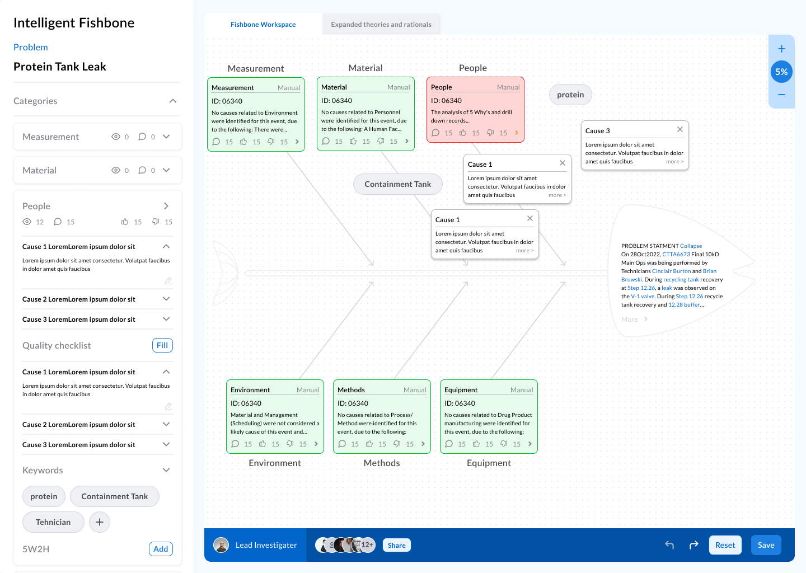
RCA · razvojni Figma dizajn
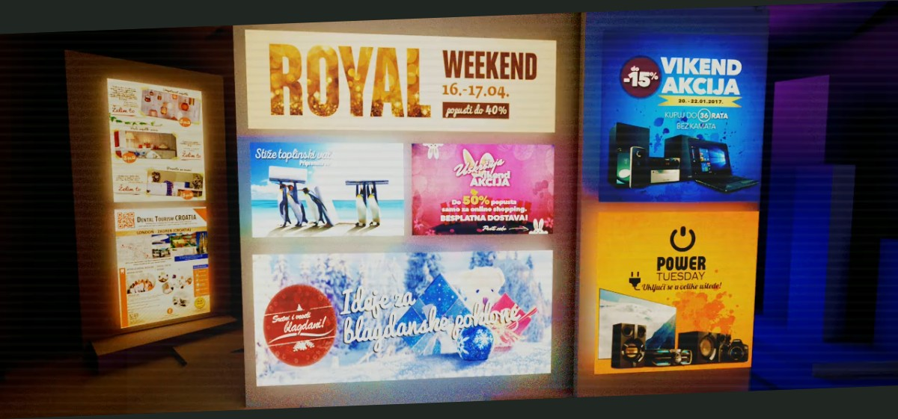
Kampanje, identiteti i web
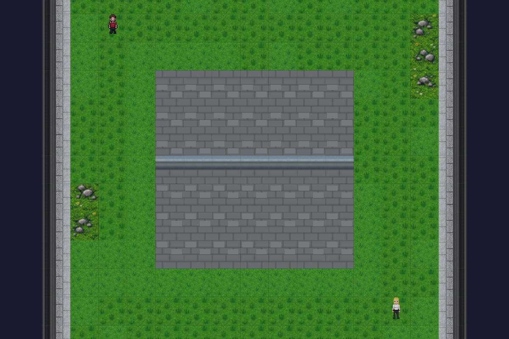
Prototip enginea i igriva simulacija
Vizuali u enterprise studijama slučaja razvojne su verzije dizajna sučelja izrađene u Figmi, a ne snimke zaslona implementiranog ili produkcijskog sustava. Imena, avatari, identifikacijske oznake i sadržaj scenarija su izmišljeni; nisu prikazani produkcijski ni osobni podaci. Završna implementacija može se razlikovati.
Vodio UX rad na istražnoj platformi dizajniranoj za internu publiku veću od 10.000 korisnika. Rad je stručno istraživanje i metode poput Fishbone, Is/Is Not i 5 Whys pretvorio u vođene, sljedive radne procese.
Četiri odluke vidljive u ovoj razvojnoj Figma verziji.
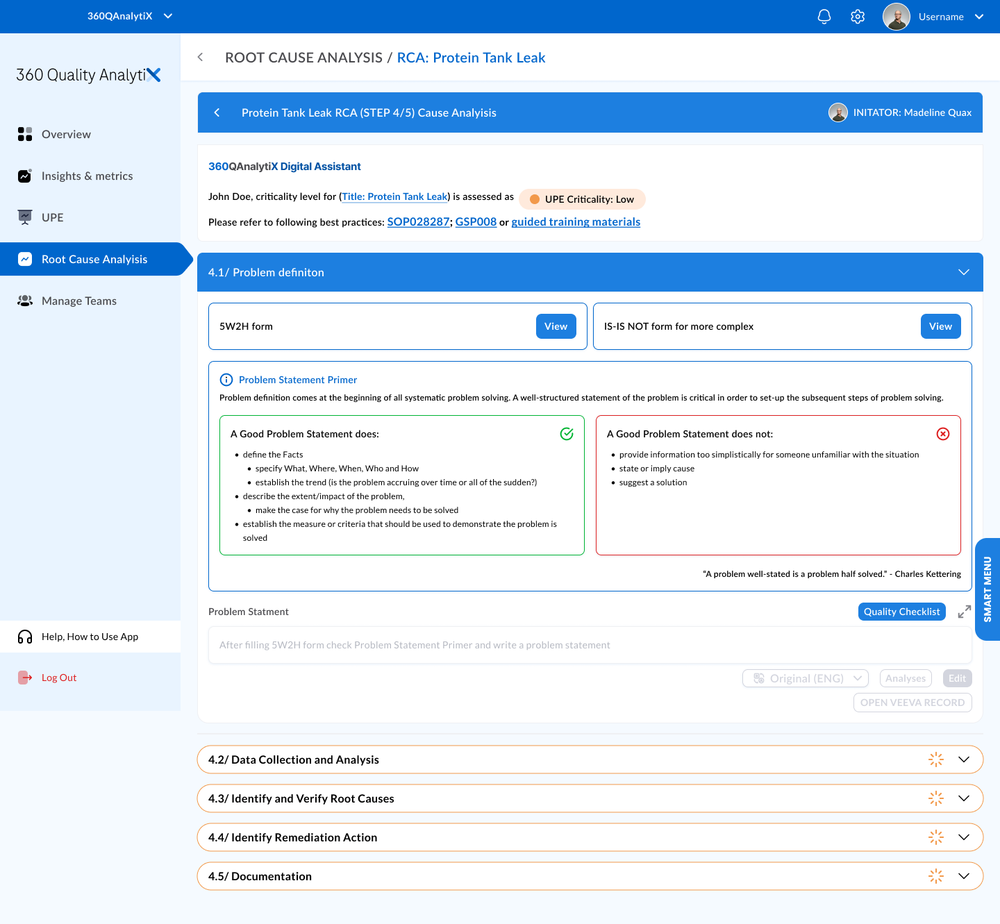
Pregled
Poboljšanje procesa analize uzroka unutar Rocheovog okvira osiguranja kvalitete. Platforma vodi proizvodne znanstvenike i istražitelje kroz sustavne metodologije rješavanja problema pri istraživanju neplaniranih događaja.
Ključni doprinosi
Istražne metodologije
Fishbone (Ishikawa)
Vizualno sučelje dijagrama uzroka i posljedica za kategorizaciju potencijalnih uzroka proizvodnih problema u sustavne grupe.
Is / Is Not
Usporedni analitički alat za razlikovanje specifičnih karakteristika problema ispitivanjem mjesta, vremena i načina pojavljivanja.
5 Whys
Sekvencijalno sučelje za ispitivanje koje vodi istražitelje kroz iterativne slojeve uzročnosti do pravog temeljnog uzroka.
Odabrane razvojne verzije dizajna sučelja
Izrađeno u Figmi tijekom razvoja proizvoda. Sva prikazana imena, avatari, ID oznake i sadržaj scenarija su izmišljeni. Kliknite sliku za uvećanje.
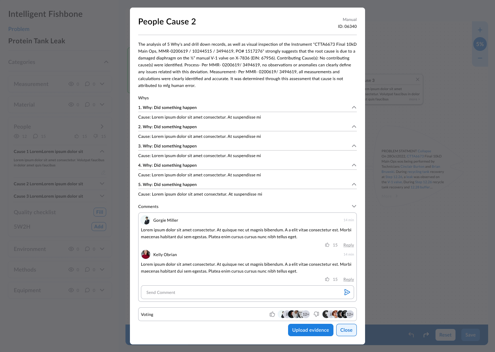
Pregled uzroka - izmišljeni scenarijRezultat
Platforma je isporučena za predviđenu internu publiku veću od 10.000 korisnika. Moj doprinos uspostavio je ponovljive uzorke sučelja i preveo više istražnih metoda u vođene radne procese u suradnji sa stručnjacima i implementacijskim timovima.
Vodio UI/UX dizajn za Intelligent Authoring i regulatorni proizvod za izvještavanje, izradio približno 120 UI dizajna i ponovljivi dizajn sustav za kontrolne ploče, strukturirane dokumente, metapodatke, ovlasti i izvještavanje.
Pregled
Dizajnirao radne procese i uzorke sučelja za farmaceutsko upravljanje dokumentacijom, uključujući kontrolne ploče, nasljeđivanje metapodataka, ovlasti temeljene na ulogama, odnose dokumenata, verzioniranje, stanja validacije i izvještajne prikaze.
Uloga je obuhvatila analizu radnih procesa, rasprave o izvedivosti, usklađivanje dionika, pripremu implementacijskih zadataka i materijala za podršku inženjerskim timovima.
Ključni doprinosi
Proces i suradnja
Bliska suradnja s Product Ownerima, stručnjacima i inženjerima koristeći draw.io za mapiranje arhitekture sustava, dokumentaciju organizacijske hijerarhije i razvoj wireframeova.
Odabrane razvojne verzije dizajna sučelja
Izrađeno u Figmi tijekom razvoja proizvoda. Sva prikazana imena, avatari, ID oznake i sadržaj scenarija su izmišljeni. Kliknite sliku za uvećanje.
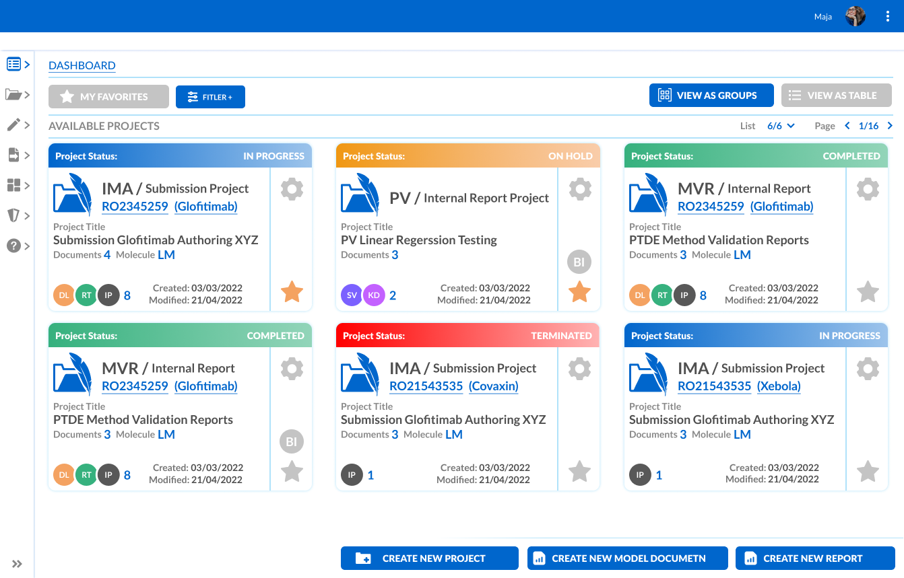
Projektna kontrolna ploča - izmišljeni sadržaj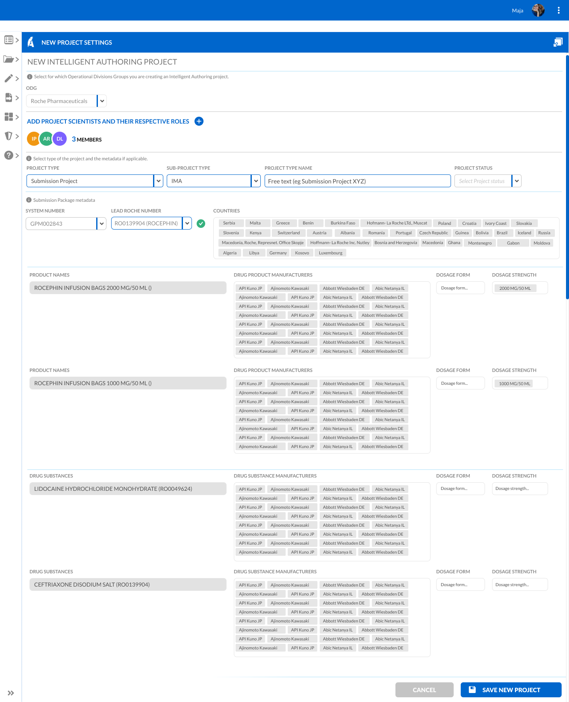
Konfiguracija metapodataka - izmišljeni sadržaj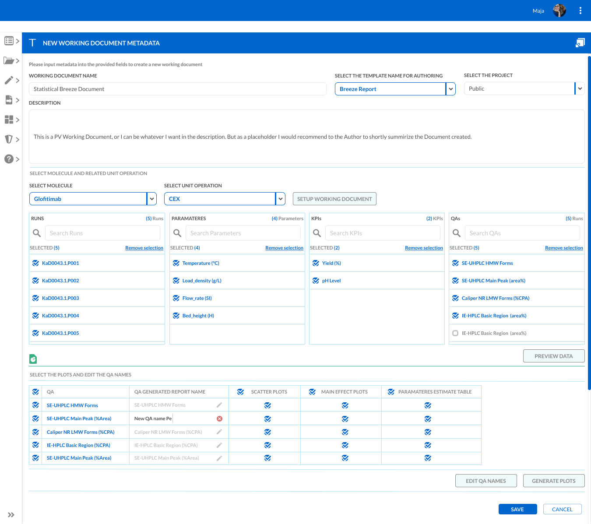
Radni proces konfiguracije izvještajaRezultat
Izradio približno 120 UI dizajna i širi ponovljivi dizajn sustav, podržao približno 50 inženjera kroz tri tima te sa širim proizvodnim timom pridonio smanjenju ručnog izvještavanja većem od 30%.
Ovaj angažman je pod aktivnim NDA. Za opseg i odgovornosti pogledajte odjeljak Iskustvo:
UI/UX konzultant i dizajner prezentacija · RFP/RFI & OSINT dubinska analiza dobavljača
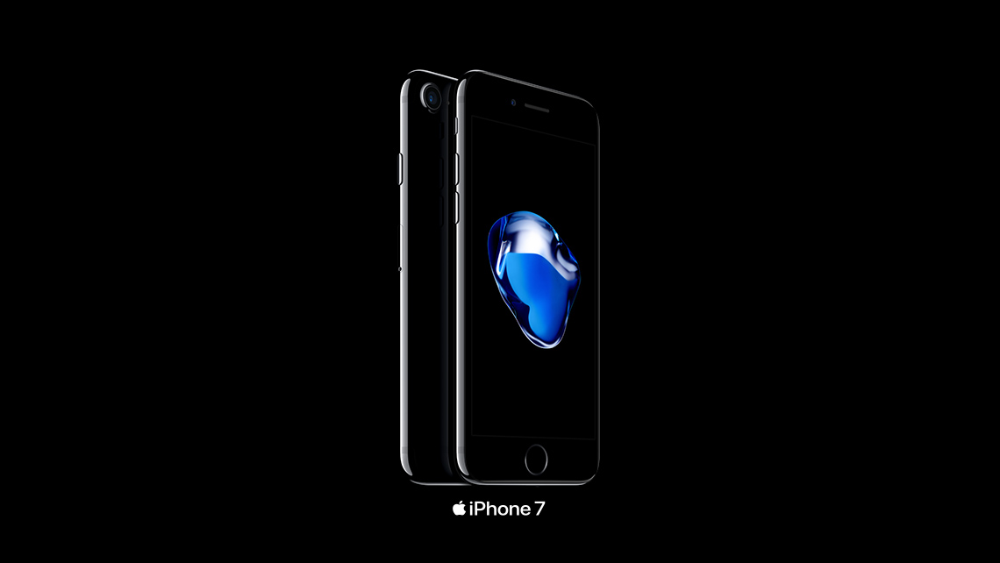
Istraživanje tržišta vodilo je minimalističkom pristupu - pohrana umjesto specifikacija, UI usklađen s bojama, crna pozadina za luksuz. Nagrađena „Najbolja promotivna landing stranica“ u Hrvatskoj (Appcom / Apple Partner, 2016).
Pogledaj demo3D vizualizacije interijera izrađene u 3ds Maxu za ugostiteljske klijente - pa zatim i stvarno izgrađene. Fotografije niske rezolucije snimljene su mobitelima tog doba, ali prostori govore sami za sebe.
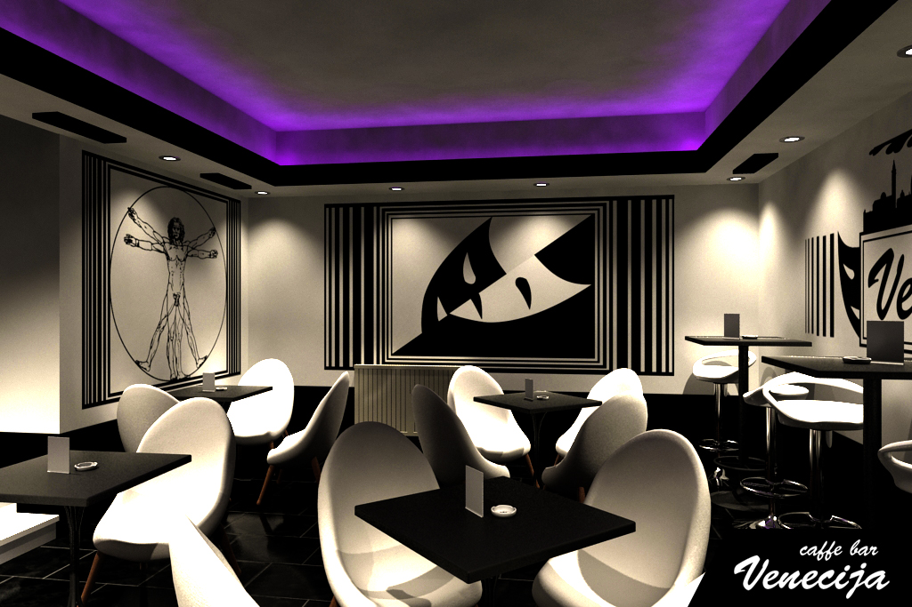
3D rendering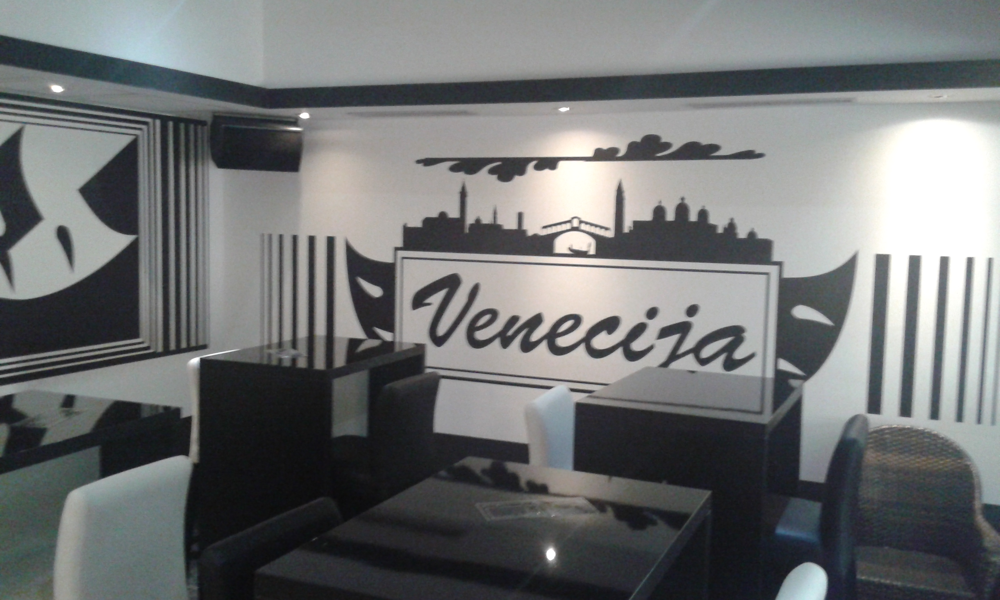
Izgrađeni rezultat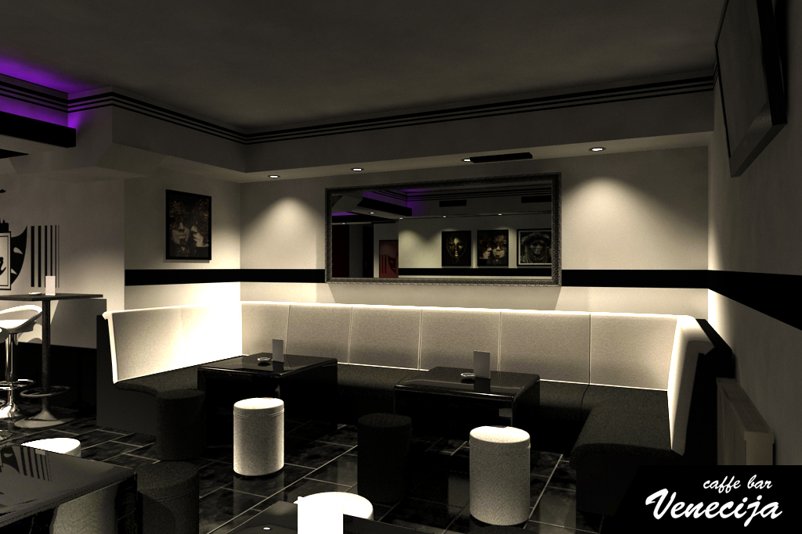
3D rendering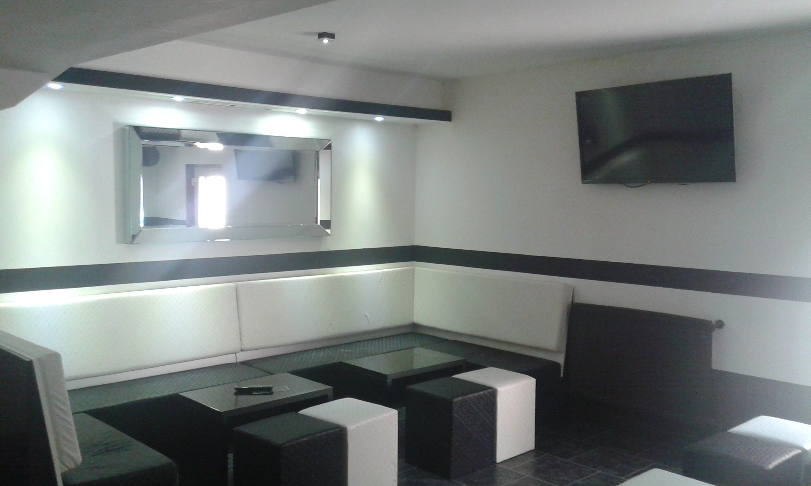
Izgrađeni rezultat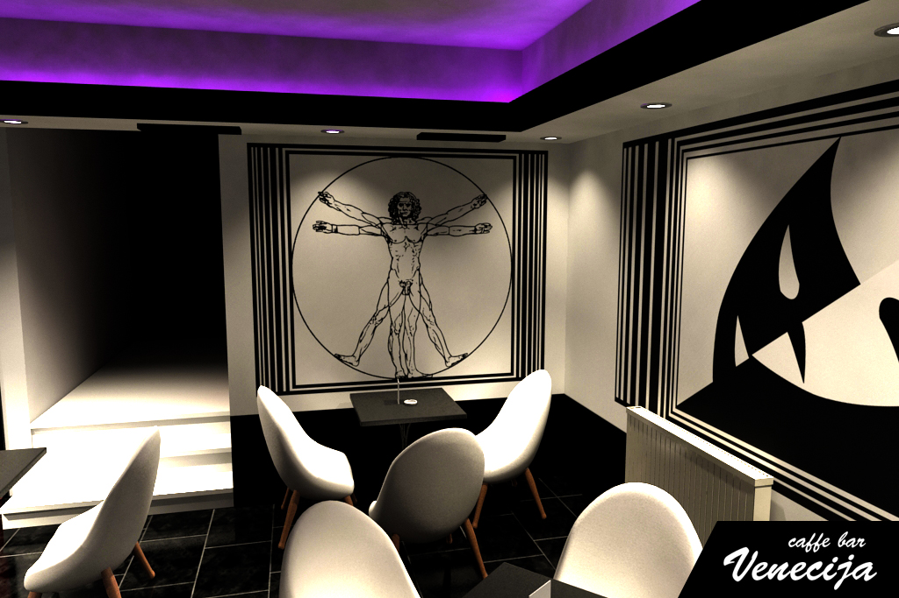
3D rendering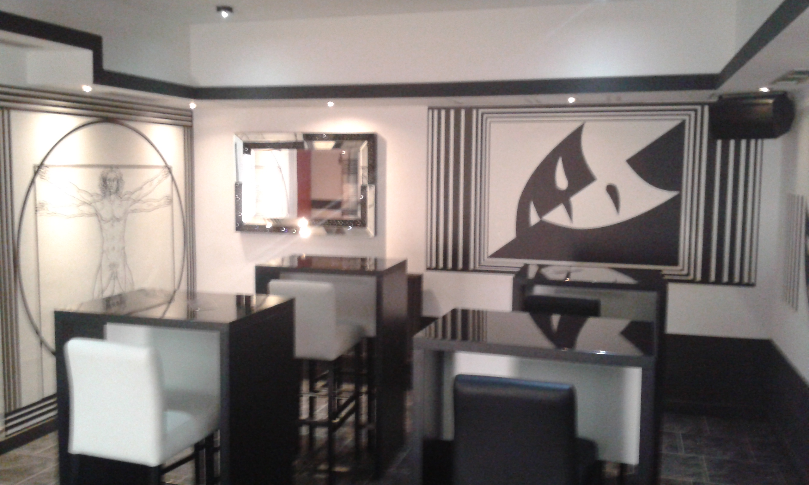
Izgrađeni rezultatNight Bar Venecija, Zagreb - dizajniran i vizualiziran 2010., izgrađen iste godine.
Iskustvo
Standing Pillars - osobni portfolio · Zagreb, Hrvatska
Osobni portfolio i neovisni projekti, a ne trenutno zaposlenje. Tražim uloge na puno ili nepuno radno vrijeme usmjerene na složene proizvode i radne procese.
Samozaposlen pod pravnim imenom Igor Pilicic | Austrija
Accenture · Klijentski ugovor u sklopu samozaposlenja · Remote | Beč, Austrija
Roche Diagnostics · Klijentski ugovor u sklopu samozaposlenja · Hibrid | Basel, Švicarska
Roche Pharmaceuticals · Klijentski ugovor u sklopu samozaposlenja · Hibrid | Penzberg, Njemačka
Harvey Norman · Nepuno radno vrijeme · Na lokaciji | Zagreb, Hrvatska
Fazgram d.o.o · Puno radno vrijeme · Na lokaciji | Zagreb, Hrvatska
Bimaco d.o.o · Puno radno vrijeme · Na lokaciji | Zagreb, Hrvatska
Samozaposlen · Freelance | Zagreb, Hrvatska
Kako radim
Moj način rada
Moj rad povezuje otkrivanje problema, analizu radnih procesa, dizajn sučelja, usklađivanje dionika i podršku isporuci. Cilj nije više dizajnerskih materijala, nego jasnija odluka o proizvodu.
Proučavam korisnike, stručni rad i poslovna ograničenja prije nego ih pretvorim u radne procese, prototipe i ponovljive uzorke.
Odluke, ovisnosti, rizike i kompromise činim vidljivima kako bi se proizvodni, poslovni i inženjerski timovi mogli uskladiti.
Smjer provjeravam prototipovima te pomažem prevesti dizajnersku namjeru u praktične upute za implementaciju i provjeru kvalitete.
Web, brend, motion i vizualna komunikacija nadopunjuju moje iskustvo u proizvodima i digitalnoj transformaciji.
Bez obzira na razinu, moj je doprinos učiniti tehnologiju jasnijom, upotrebljivijom i pouzdanijom.
Stručnost
Senior UX/Product dizajn moja je primarna uloga. Poslovna analiza, vizualni dizajn, evaluacija dobavljača i AI-potpomognuta isporuka jačaju moj rad u multidisciplinarnim timovima.
Najviše doprinosim ondje gdje složene zahtjeve treba pretvoriti u jasne odluke, upotrebljiva sučelja i provedive korake.
Istraživanje, dizajn radnih procesa, prototipiranje i dizajn sustavi za složene proizvode, utemeljeni na stvarnom radu korisnika i stručnjaka.
Povezuje potrebe korisnika, poslovna pravila i stvarnost implementacije.
Dodatna sposobnost razvijena kroz RFP/RFI rad, scorecardove, OSINT istraživanje, otkrivanje rizika i materijale za izvršne odluke.
Povezuje dokaze i kompromise s jasnim, sljedivim odlukama.
Ranije iskustvo u webu, e-trgovini, brendiranju, motion dizajnu i 3D-u nadopunjuje moj enterprise UX i tehnološki rad.
Relevantno za timove koji cijene dizajnera koji razumije cijeli put od vizualnog identiteta do funkcionalnog digitalnog proizvoda.
Povezuje vizualnu vještinu s upotrebljivom digitalnom isporukom.
Vještine i alati
Dizajn
Nabava i savjetovanje
Dizajnerski alati
Suradnja i proces
Tehničko
Meke vještine
Samostalni tehnički projekt
Tiny Humans Engine osobni je prototip 2D enginea i editora u razvoju. Projekt pokazuje definiranje zahtjeva, modularnu arhitekturu, validaciju, dokumentaciju i odgovornu uporabu AI-ja u složenoj izradi.
2D engine i editor prototip u razvoju, izrađen kroz AI-potpomognutu suradnju
Tiny Humans je osobni prototip s više od 30.000 redaka, editorom, runtimeom, asset pipelineom, scripting sustavom i radom na pakiranju. AI alate koristio sam unutar strukturiranog kruga: Specificirati -> Arhitekturirati -> Upravljati -> Validirati. Projekt pokazuje kako definiram zahtjeve, upravljam ovisnostima, testiram perzistenciju i dokumentiram odluke. Nije komercijalno objavljen ni produkcijski proizvod.
Napredak SDK-a i editora
Prototip sadrži 29 glavnih sustava, ali širi koncept editora i SDK-a dovršen je približno 15%. Proof of concept ispod mali je isječak od oko 1.800 redaka.
Arhitektura sustava
Engine Registry + Event Bus uzorak razdvaja 29 sustava. Modularni dizajn znači da se svaki sustav (rasvjeta, audio, NPC-ovi, scripting) može neovisno razvijati, testirati i ažurirati.
Validacija i zaštitne ograde
Save Validator provjerava sedam kategorija integriteta podataka. Feature Manifest smanjuje dupliciranje rada, a checkliste perzistencije podržavaju provjeru pisanja, čitanja i round-tripa.
AI upravljanje
Projektne AI upute definiraju provjere perzistencije, prevenciju čestih bugova, pravila arhitekture i implementacijske radne procese. Rezultate provjeravam i testiram umjesto da ih automatski prihvatim.
Implementirani prototipni sustavi
Raycast rasvjeta s DDA sjenama. AI sustavi stanja s frakcijskim ciljanjem. 4-kanalni prostorni audio. Upravljanje scenama s cachiranjem mapa. 8-tipna logička vrata s prevencijom petlji. Potpuni scripting SDK s Runtime API-jem.
Specificirati
Definirati zahtjeve s preciznošću RFP-a - opseg, ograničenja, kriteriji uspjeha, točke integracije.
Arhitekturirati
Dizajnirati sustav prije pisanja koda. Registry uzorci, tokovi događaja, modeli podataka, putovi perzistencije.
Upravljati
Copilot instrukcije, feature manifesti, validacijske checkliste. AI slijedi pravila, ne osjećaje.
Validirati
Save validatori, roundtrip testiranje, dokumentirane odluke. Svaka promjena je sljediva i obranljiva.
Ovaj projekt nije zamjena za profesionalno inženjersko iskustvo. Pokazuje kako koristim strukturiranu AI suradnju, provjeru i dokumentaciju za istraživanje tehnički složene osobne ideje.
To je dodatni dokaz sustavnog razmišljanja, ustrajnosti i praktičnog prototipiranja.
Otvoren za prilike
Tražim stabilno zaposlenje na puno ili nepuno radno vrijeme, primarno u Senior UX/Product dizajnu i povezanim ulogama koje spajaju složene radne procese, vizualnu komunikaciju, poslovnu analizu i digitalnu isporuku.
Telefon
+385 92 502 9969Lokacija
Sjedište: Zagreb, Hrvatska - radim diljem Europe, Azije i SAD-a
Remote-first, rado i osobno. Redovito radim s timovima u Beču, Münchenu, Zürichu, Baselu, Zagrebu i šire. EU radna dozvola - viza nije potrebna.
Jezici
Hrvatski - materinski; Engleski - tečno; Njemački - A2